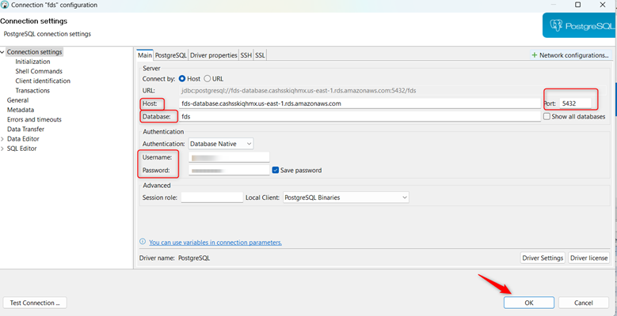
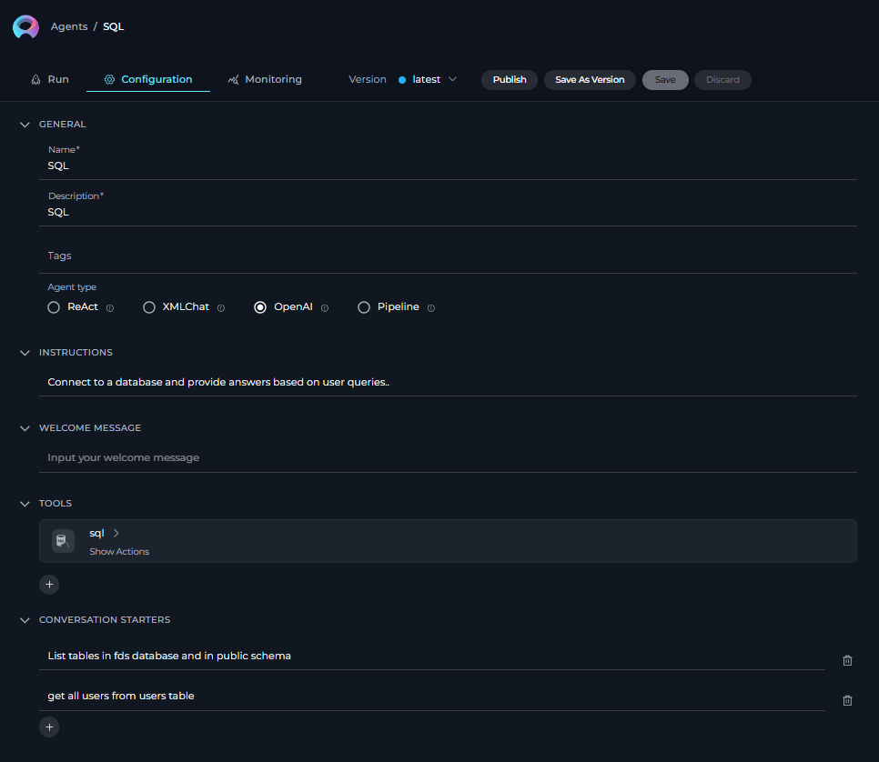
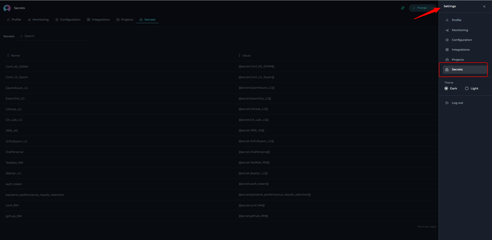
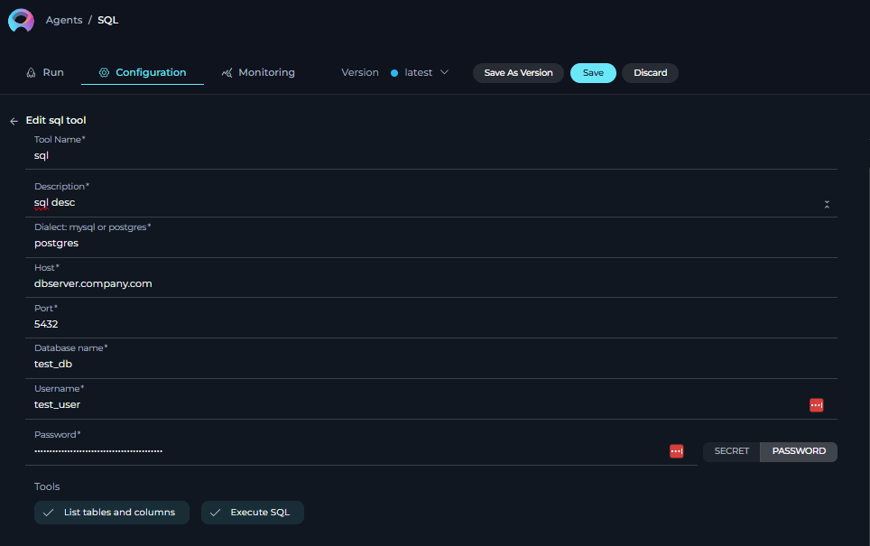
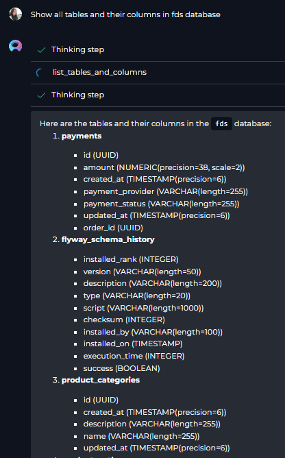
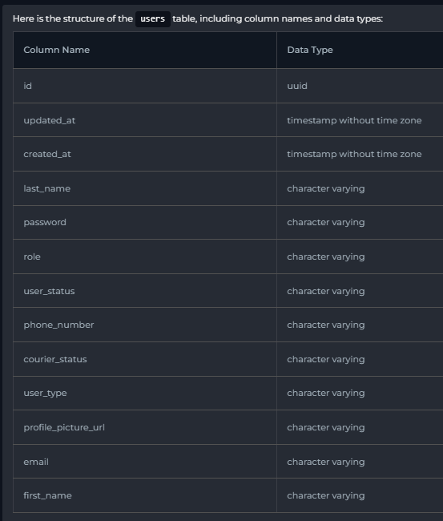

ELITEA Toolkit Guide: SQL Integration
Introduction
Purpose of this Guide
This guide is your definitive resource for integrating and utilizing the SQL toolkit within ELITEA. It provides a step-by-step walkthrough, from understanding SQL database prerequisites to configuring the toolkit in ELITEA and effectively using it within your Agents. By following this guide, you will unlock the power of automated data interaction, streamlined database workflows, and enhanced data-driven decision making, all directly within the ELITEA platform. This integration empowers you to leverage AI-driven automation to optimize your workflows that rely on structured data stored in SQL databases, using the combined strengths of ELITEA and SQL.
Brief Overview of SQL
SQL (Structured Query Language) is the standard language for interacting with relational database management systems (RDBMS). It's designed for managing and manipulating structured data held in databases. SQL provides a powerful and efficient way to:
- Query Data: Retrieve specific information from databases based on defined criteria. SQL queries allow you to filter, sort, and join data from multiple tables to get the exact insights you need.
- Manipulate Data: Insert, update, and delete data within databases. SQL enables you to modify database content to keep it accurate and up-to-date.
- Define Data Structures: Create, modify, and delete database objects like tables, views, and indexes. SQL allows you to structure your data effectively for optimal storage and retrieval.
- Control Data Access: Manage user permissions and access rights to ensure data security and integrity. SQL provides mechanisms to control who can access and modify specific parts of the database.
Integrating SQL with ELITEA brings these robust data management capabilities directly into your AI-powered workflows. Your ELITEA Agents can then interact with your SQL databases to automate data-related tasks, enhance data processing, and improve data accessibility through intelligent automation.
SQL Database Prerequisites and Configuration
Preconditions
Before integrating your SQL database with ELITEA, ensure the following prerequisites are met:
- Running SQL Database Instance: You need an operational SQL database instance. This could be MySQL, PostgreSQL, SQL Server, or another supported SQL database. The database server must be running and accessible.
- Database Access Credentials: You must have valid credentials (username and password) that ELITEA can use to connect to your database.
- Database Server Accessibility: ELITEA needs to be able to communicate with your SQL server. Consider the following network accessibility requirements:
- Public Accessibility (for externally hosted ELITEA): If your ELITEA instance is hosted externally (e.g., in the cloud) and your SQL server is on a private network, your SQL server must be accessible from the public internet or through a secure tunnel (like a VPN) that ELITEA can connect to. For locally hosted SQL servers, assigning a Public IP address might be necessary. Security Note: Exposing your database directly to the public internet is generally discouraged for security reasons. Consider using secure methods like VPNs or allowing access only from specific IP ranges.
- Same Network Environment (for internally hosted ELITEA): If you are hosting ELITEA within the same network environment as your SQL server (e.g., behind a corporate firewall), ensure that there are no firewall rules blocking communication between the ELITEA instance and the SQL server on the designated port (e.g., 3306 for MySQL, 5432 for PostgreSQL).
Database Connection
This section describes how to connect to your database server using a database client application.
-
Launch Your Database Client: Open either pgAdmin (for PostgreSQL), MySQL Workbench (for MySQL), or DBeaver (which supports multiple database types).
-
Initiate a New Connection:
- pgAdmin: Expand "Servers" in the object browser, right-click, and select "Create" -> "Server". A server creation dialog will appear.
- MySQL Workbench: Navigate to "Database" -> "Manage Connections" -> "New". This opens the connection management window.
- DBeaver: Go to "Database" -> "New Database Connection". A wizard for selecting the database type will appear.
-
Configure the Connection Settings: Carefully enter the following information.
- Host/Server Address:
dbserver.company.com(This may also be an IP address like192.168.1.100if you know the server's IP.) This is the network address where your database server is located. - Port: The port number your database server is listening on. Use the correct port for your database type:
- PostgreSQL:
5432 - MySQL:
3306 - SQL Server:
1433
- PostgreSQL:
- Database Name:
test_db(The specific database you want to access.) - Username:
test_user(The username you've been assigned to access the database.) - Password:
Test@123(The password associated with the username.)
- Host/Server Address:
-
Test the Connection: Click the "Test Connection" button (or its equivalent) within the connection configuration window.
- Successful Test: You should receive a confirmation message. Proceed to step 5.
- Unsuccessful Test: If the test fails, carefully review the following:
- Typographical Errors: Double-check the host address, port, username, and password for any typos.
- Server Availability: Ensure the database server is running and accessible from your network. (You may need to contact your system administrator.)
- Firewall Rules: Confirm that your firewall is not blocking connections to the database server on the specified port.
-
Establish the Connection: If the connection test was successful, click "OK" (or "Save") and then "Connect" to establish the connection to the database. You should now be able to browse the database schema and execute queries. 
SQL Integration with ELITEA
Overview of SQL Toolkit
The SQL integration within the ELITEA platform enhances data management by enabling seamless access to structured database information. This integration allows users to query, retrieve, and analyze SQL databases directly from ELITEA, ensuring that critical business data remains synchronized and readily available. By eliminating the need to switch between database management tools, teams can improve efficiency and maintain a single source of truth for key operational and analytical data. With this integration, users can pull real-time structured data from SQL databases into ELITEA, enhancing workflows with up-to-date records, analytical insights, and system-generated reports. The integration supports automated query execution, data visualization, ensuring that the latest database information is always accessible within the ELITEA environment.
Agent Creation/Configuration
To integrate SQL, you'll need to configure it within an ELITEA Agent. You can either create a new Agent or modify an existing one.
Creating a New Agent
To create a new agent within the system:
-
Click the "+ Agent" Button: Locate and click the + Agent button, typically found in the top right corner of the application. This will initiate the agent creation process.
-
Fill Out Basic Information (Name and Description):
- Name: Enter a descriptive and easily identifiable name for the agent in the "Name" field.
-
Description: Provide a brief description of the agent's purpose and functionality in the "Description" field. This helps other users understand the agent's intended use.
-
Add Tags (Optional): The "Tags" input box allows you to categorize and organize agents.
- Add a New Tag: Type the desired tag name in the "Tags" input box.
-
Select from Existing Tags: If there are pre-existing tags, you can select them from a dropdown or list of available tags presented in the "Tags" input box. Using consistent tagging helps with searching and filtering agents.
-
Select the Agent Type: Choose the appropriate agent type from the available options (e.g., OpenAI, ReAct, Pipeline).
-
Instructions: Provide Instructions for selected Agent Type in the Instarction field.
-
Configure Conversation Starters and Welcome Message (Optional):
- Conversation Starter: Define phrases or questions that users can click on to initiate a conversation with the agent. This provides users with guidance and examples of how to interact with the agent.
- Welcome Message: Create a welcome message that the agent displays when a user first interacts with it. This provides context and sets expectations for the interaction. A good welcome message might introduce the agent's purpose and capabilities. 
Modifying an Existing Agent
To modify an existing agent within the system:
-
Locate the Agent: Find the agent you want to modify in the agent list or using search.
-
Open for Editing: Click the agent's name to open its configuration page.
-
Modify Settings: Change the Name, Description, Tags, Agent Type, Instructions, Conversation Starters, or Welcome Message as needed.
-
Save Changes: Click the "Save" button.
Toolkit Configuration
This section details how to configure the SQL toolkit within your ELITEA Agent.
- Add Toolkit: In the "Tools" section, click the "+" icon.
- Select SQL: Choose "SQL" from the dropdown list of available toolkits. This opens the "New SQL tool" configuration panel.
-
Configure Toolkit Details: Fill in the following fields:
- Name: Enter a Name for this SQL toolkit instance. Choose a descriptive name that helps you identify its purpose within your Agent's instructions (e.g., "DataQueryTool", "CustomerDatabase").
- Description: Provide a Description for the toolkit, clarifying its purpose or the specific database it connects to (e.g., "Toolkit to query the main customer database").
- Dialect: Select the SQL Dialect of your database from the dropdown menu. Choose either "MySQL" or "PostgreSQL" based on your database type.
- Host: Enter the Hostname or IP Address of your SQL server. For example:
dbserver.example.comor192.168.1.100. - Port: Specify the Port Number used to connect to your SQL server. The default ports are:
- PostgreSQL:
5432 - MySQL:
3306 - If your database uses a non-default port, enter that port number here.
- PostgreSQL:
- Database name: Enter the Name of the Database you want to connect to. For example:
mydatabase. - Username: Provide the Username for database authentication. This should be the username of the dedicated database user you configured for ELITEA.
- Password: Choose the authentication method for the password:
- Secret (Recommended): Select "Secret" and choose a pre-configured secret from the dropdown list. You must first create and securely store your database password as a Secret in ELITEA's Secret section. Using Secrets is highly recommended for enhanced security. 
- Password: Select "Password" and directly enter the Password associated with the provided username in the "Password" field. Caution: While convenient, directly entering the password is less secure than using Secrets.
-
Enable Tools: In the "Tools" section of the SQL toolkit configuration, select the checkboxes next to the SQL tools you want to enable for your Agent. Enable only the tools your Agent will actually use to adhere to the principle of least privilege and enhance security.
- Complete Configuration: Click the arrow icon (at the top right of the toolkit configuration) to save the SQL toolkit setup and return to the main Agent configuration.
- Click Save to apply configuration and changes to the Agent. 
NOTE: Database Server Accessibility: Elitea must be able to communicate with your SQL server. Please ensure the following requirements are met:
- Public Accessibility: If your SQL server is hosted locally, it must be assigned a Public IP address. This allows Elitea to access the database from outside your local network.
- Environment Configuration: If your SQL server is in a closed environment (e.g., behind corporate firewalls or exclusively accessible via VPN), you must deploy the Elitea instance within the same environment. This ensures direct access to the database.
Tool Overview
The SQL toolkit provides the following tools for ELITEA SQL Agents:
list_tables_and_columns- Retrieves a list of tables and their columns from the connected database. This is useful for understanding the database schema and available data.execute_sql- Executes a custom SQL query against the connected database. This tool allows for flexible data retrieval and manipulation based on your specific needs.
Instructions and Prompts for Using the Toolkit
To instruct your ELITEA Agent to use the SQL toolkit, you need to provide clear instructions within the Agent's "Instructions" field. These instructions guide the Agent on when and how to use the available tools.
Instruction Creation for OpenAI Agents
When creating instructions for the SQL toolkit for OpenAI-based Agents, focus on clear, action-oriented language. Break down tasks into simple steps and explicitly state the parameters required for each tool. OpenAI Agents respond best to instructions that are:
- Direct and Imperative: Use action verbs and clear commands (e.g., "Use the 'list_tables_and_columns' tool...", "Execute the following SQL query...").
- Parameter-Focused: Clearly list each parameter and how the Agent should determine its value.
- Context-Aware: Provide enough context so the Agent understands the overall goal and when to use specific tools within a workflow.
When instructing your Agent to use a SQL toolkit, use this pattern:
1. Identify the goal: [State the objective, e.g., "To list all tables in the database"].
2. Tool Selection: Use the "[tool_name]" tool.
3. Parameter Specification: Provide the following parameters:
- Parameter Name 1: <value or description of value>
- Parameter Name 2: <value or description of value>
- ...
4. Expected Outcome: [Optionally, describe what should happen after the tool is used].
Example Agent Instructions for SQL Toolkit Tools (OpenAI Agent Friendly):
- Agent Instructions for Listing Tables and Columns:
1. Goal: To get a list of all tables and their columns in the database.
2. Tool: Use the "list_tables_and_columns" tool.
3. Parameters:
- Include Data Types: "true" (to include data types in the output)
- Output Format: "table" (to display output in tabular format)
4. Outcome: The Agent will list all tables and their columns, including data types, in a table format.
- Agent Instructions for Executing a SQL Query:
1. Goal: To retrieve the names and emails of all users from the 'users' table.
2. Tool: Use the "execute_sql" tool.
3. Parameters:
- Query: "SELECT name, email FROM users;"
- Output Format: "JSON" (to get output in JSON format)
- Limit: "100" (to limit the output to the first 100 rows)
4. Outcome: The Agent will execute the SQL query and return a JSON formatted list of user names and emails, limited to 100 entries.
Conversation Starters
Use these conversation starters to interact with your SQL-integrated Agent.
1. For Testing and Troubleshooting Connection:
These starters are designed to verify if the SQL toolkit is correctly configured and connected to your database.
- "List all tables and columns." - This tests basic connectivity and schema retrieval.
- "Show the tables in the database." - Another way to test table listing. 
2. For General Agent Usage Scenarios:
These starters demonstrate how to initiate agent execution for common SQL-related tasks.
-
"What are the columns in the 'customers' table?" - Uses
list_tables_and_columnsto get table schema. -
"Find all products with a price greater than $50 and list their names and prices." - Uses
execute_sqlwith filtering. - "Retrieve the structure of the users table, including column names and data types." - Uses
list_tables_and_columnsfor a specific table. 
These conversation starters provide a starting point for interacting with your SQL-integrated ELITEA Agent and can be customized further based on your specific use cases and workflows.
Use Cases
The SQL toolkit unlocks numerous automation possibilities for data-driven workflows within ELITEA. Here are some key use cases, demonstrating how each tool can be applied:
-
Database Schema Exploration:
- Scenario: Quickly understand the structure of a database, especially when working with unfamiliar databases.
- Tools Used:
list_tables_and_columns - Example Instruction: "Use the 'list_tables_and_columns' tool to show me all tables and their columns in the 'sales_db' database."
- Benefit: Reduces the time spent manually exploring database schemas using database clients. Agents can quickly provide schema information, enabling faster query construction and data analysis.
-
Data Retrieval for Reporting and Analysis:
- Scenario: Generate reports or perform data analysis by retrieving specific data sets from the database.
- Tools Used:
execute_sql - Example Instruction: "Use the 'execute_sql' tool to execute the query: 'SELECT category, AVG(price) FROM products GROUP BY category;' and show the results in a table."
- Benefit: Automates data extraction for reporting and analysis. Agents can fetch real-time data based on complex queries, eliminating manual data export and manipulation.
-
Data Validation and Monitoring:
- Scenario: Regularly check data integrity or monitor specific data conditions within the database.
- Tools Used:
execute_sql - Example Instruction: "Use the 'execute_sql' tool to run the query: 'SELECT COUNT(*) FROM orders WHERE order_date < DATE_SUB(CURDATE(), INTERVAL 7 DAY) AND status = 'pending';' and tell me the count of pending orders older than 7 days."
- Benefit: Enables proactive data monitoring and validation. Agents can automatically execute checks and alert users to anomalies or data quality issues.
Troubleshooting and Support
Troubleshooting
-
Connection Issues:
- Problem: Agent fails to connect to the SQL database, resulting in errors during toolkit execution.
- Troubleshooting Steps:
- Verify Connection Details: Double-check the Host, Port, Database name, Username, and Password in the toolkit configuration. Ensure they are accurate and match your database credentials.
- Database Server Status: Confirm that your SQL server is running and accessible. Try connecting to the database using a database client (like MySQL Workbench, pgAdmin, DBeaver) from the same network where ELITEA is running to isolate network issues.
- Network Connectivity: Verify network connectivity between ELITEA and your SQL server. Check firewall rules, network configurations, and ensure that the SQL server port is open for incoming connections from ELITEA's IP address (if applicable).
- Database Dialect: Ensure you have selected the correct SQL Dialect ("MySQL" or "PostgreSQL") in the toolkit configuration that matches your database type.
-
Authorization Errors (Access Denied):
- Problem: Agent receives "Access Denied" or "Unauthorized" errors when trying to access the database or execute queries.
- Troubleshooting Steps:
- Verify Database User Permissions: Re-examine the permissions granted to the database user you are using for ELITEA integration. Ensure the user has sufficient privileges (e.g.,
SELECT,EXECUTE) for the database and tables you are trying to access. - Incorrect Credentials: Double-check the Username and Password in the toolkit configuration for typos or errors. If using Secrets, ensure the Secret is correctly configured and contains the right password.
- Verify Database User Permissions: Re-examine the permissions granted to the database user you are using for ELITEA integration. Ensure the user has sufficient privileges (e.g.,
FAQ
- Q: Can I use this toolkit with other SQL databases besides MySQL and PostgreSQL?
- A: Currently, the ELITEA SQL toolkit officially supports MySQL and PostgreSQL dialects. Support for other SQL databases might be added in future updates. If you require integration with a different SQL database, please contact ELITEA support to discuss your needs.
- Q: Why can't Elitea connect to my SQL server?
- A: Elitea requires direct access to your SQL server. If you're experiencing connectivity issues, check the following:
- Public IP: Ensure that your local-hosted SQL server has a Public IP address if it needs to be accessed from outside your local network. Without this, ELITEA cannot initiate a connection to your database.
- Network Environment: If your SQL server operates within a closed network or a VPN-restricted environment, deploy ELITEA within the same network. This ensures that ELITEA can reach the SQL server without external network barriers.
- A: Elitea requires direct access to your SQL server. If you're experiencing connectivity issues, check the following:
Support Contact
For any issues, questions, or further assistance with the SQL integration or ELITEA Agents, please reach out to our dedicated ELITEA Support Team. We are committed to providing prompt and effective support to ensure your success with ELITEA.
Contact ELITEA Support:
- Email: SupportAlita@epam.com
Best Practices for Effective Support Requests:
To help us understand and resolve your issue as quickly as possible, please ensure you provide the following information in your support email:
- ELITEA Environment: Clearly specify the ELITEA environment you are using (e.g., "Nexus," "Alita Lab," "EYE").
- Project Details: Indicate the Project Name and whether you are working in your Private workspace or a Team project.
- Detailed Issue Description: Provide a clear, concise, and detailed description of the problem you are encountering. Explain what you were trying to do, what you expected to happen, and what actually occurred.
- Relevant Configuration Information: To help us diagnose the issue, please include relevant configuration details, such as:
- Agent Instructions (Screenshot or Text): If the issue is with an Agent, provide a screenshot or copy the text of your Agent's "Instructions" field.
- Toolkit Configurations (Screenshots): If the issue involves the SQL toolkit or other toolkits, include screenshots of the toolkit configuration settings within your Agent.
- Error Messages (Full Error Text): If you are encountering an error message, please provide the complete error text. In the Chat window, expand the error details and copy the full error message. This detailed error information is crucial for diagnosis.
- Your Query/Prompt (Exact Text): If the issue is related to Agent execution, provide the exact query or prompt you used to trigger the issue.
Before Contacting Support:
We encourage you to first explore the resources available within this guide and the broader ELITEA documentation. You may find answers to common questions or solutions to known issues in the documentation.
Useful Links
To further enhance your understanding and skills in integrating SQL with ELITEA, here are some helpful resources:
- MySQL Official Website: Access the official website for MySQL documentation, downloads, and community resources.
- PostgreSQL Official Website: Access the official website for PostgreSQL documentation, downloads, and community resources.
- SQL Tutorial (W3Schools): A comprehensive SQL tutorial for learning SQL syntax and concepts.
- ELITEA Secrets: Learn how to securely store your database credentials using ELITEA's Secrets management feature for enhanced security.
- ELITEA Agents Configuration: Find out more about creating and configuring Agents in ELITEA, where you integrate the SQL toolkit to automate your workflows.
- ELITEA Support Email: Contact the ELITEA support team for direct assistance with SQL integration or any other questions and issues you may encounter.